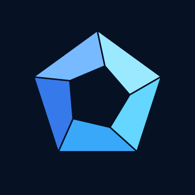

敷き詰め · R013
3,964形の層数を証拠付きで確かめた
Kaplanの表から選んだ3,964形について、何層まで囲めるかを、証拠付きで確かめました。
確かめ方：SATの証明書（DRAT）・符号化の正しさはLean

滝本竜彦の研究室です。AIとともに数学と科学の問いを調べ、確かめられる形で結果を公開しています。
人間の査読は受けていません。確認方法と範囲は各成果に記しています。
敷き詰め · R013
Kaplanの表から選んだ3,964形について、何層まで囲めるかを、証拠付きで確かめました。
確かめ方：SATの証明書（DRAT）・符号化の正しさはLean
感染症モデル · R016
行動変容SIRモデルでは、既知の整数k ≥ 2なら、完全な感染曲線と総人口から、一般的な率と隠れた人数を一意に決められます。
確かめ方：散文の証明と厳密な記号計算
RNAモデル · R017-A
不対塩基1個のヘアピンをもつmaxStacksの固定族では、二塩基対のらせん12個を一意に設計でき、13個以上はできません。RNAモデルでの結果です。
確かめ方：SATの証明（DRAT・cake_lpr）